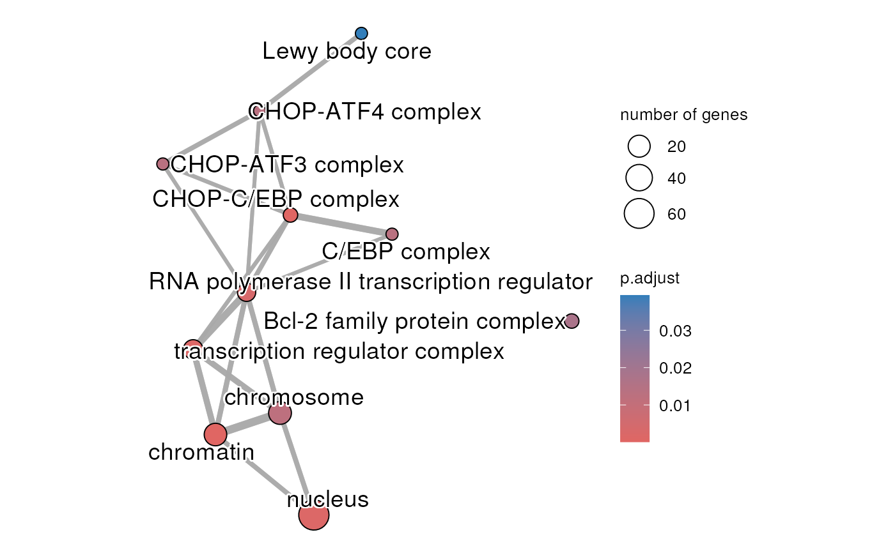

R/methodsEmap.R
createEnrichMap.RdUser selected enrichment terms are used to create a enrichment map. The selection of the term can by specifying by the source of the terms (GO:MF, REAC, TF, etc...) or by listing the selected term IDs. The map is only generated when there is at least on significant term to graph.
createEnrichMap(
gostObject,
query,
source = c("TERM_ID", "GO:MF", "GO:CC", "GO:BP", "KEGG", "REAC", "TF", "MIRNA", "HPA",
"CORUM", "HP", "WP"),
termIDs = NULL,
removeRoot = TRUE,
title = "gprofiler network",
showCategory = 30,
groupCategory = FALSE,
cexLabelCategory = 1,
cexCategory = 1
)a list corresponding to gprofiler2 enrichment
output that contains and that contains
the results from an enrichment analysis.
a character string representing the name of the query
that is going to be used to generate the graph. The query must exist in the
gostObject object.
a character string representing the selected source
that will be used to generate the network. To hand-pick the terms to be
used, "TERM_ID" should be used and the list of selected term IDs should
be passed through the termIDs parameter. The possible sources are
"GO:BP" for Gene Ontology Biological Process, "GO:CC" for Gene Ontology
Cellular Component, "GO:MF" for Gene Ontology Molecular Function,
"KEGG" for Kegg, "REAC" for Reactome, "TF" for TRANSFAC, "MIRNA" for
miRTarBase, "CORUM" for CORUM database, "HP" for Human phenotype ontology
and "WP" for WikiPathways. Default: "TERM_ID".
a vector of character strings that contains the
term IDS retained for the creation of the network. Default: NULL.
a logical that specified if the root terms of
the selected source should be removed (when present). Default: TRUE.
a character string representing the name TODO
a positive integer or a vector of
characters representing terms. If a integer, the first
n terms will be displayed. If vector of terms,
the selected terms will be displayed. Default: 30L.
a logical indicating if the categories should
be grouped. Default: FALSE.
a positive numeric representing the amount by
which plotting category nodes label size should be scaled relative
to the default (1). Default: 1.s
a positive numeric representing the amount by
which plotting category nodes should be scaled relative to the default (1).
Default: 1.
a ggplot object which is the enrichment map for enrichment
results.
## Loading dataset containing result from an enrichment analysis done with
## gprofiler2
data(parentalNapaVsDMSOEnrichment)
## Extract query information (only one in this dataset)
query <- unique(parentalNapaVsDMSOEnrichment$result$query)
## Create graph for Gene Ontology - Cellular Component related results
createEnrichMap(gostObject=parentalNapaVsDMSOEnrichment,
query=query, source="GO:CC", removeRoot=TRUE,
title="GO Cellular Component")
#> Warning: Use 'cex.params = list(category_node = your_value)' instead of 'cex_category'.
#> The cex_category parameter will be removed in the next version.
#> Warning: Use 'cex.params = list(category_label = your_value)' instead of 'cex_label_category'.
#> The cex_label_category parameter will be removed in the next version.
#> Warning: Use 'cluster.params = list(cluster = your_value)' instead of 'group_category'.
#> The group_category parameter will be removed in the next version.
